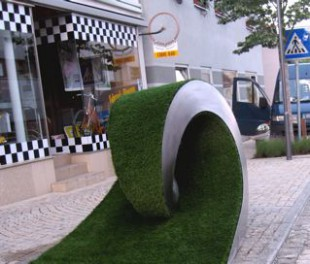
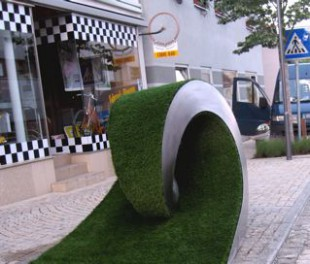

The Beginning Of The Future
| iron, earth, grass, 1.35 x 1.5 x 7 m |
2015


 


The Beginning Of The Future
| iron, earth, grass, 1.35 x 1.5 x 7 m |
2015
This work was inspired by holding an apple in the hand as if it was a globe, imagining what would happen if when peeling the skin the knife did not stop but continued to peel off the flesh. An allegory of our time.